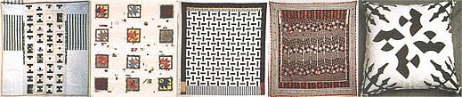

On The American Quilt
By Daphne Taylor
December/January 1998
CRAFTS
By Daphne Taylor
I came to quilting five years ago. As a painter, I saw scraps of cloth as another set of materials to cut, tear, compose, and create with. As a child, I grew up within a dynamic circle of women whose work with the needle and thread helped shape my creative vision. I always sewed. I always painted. If I didn't do one. I did the other.
Each season I would allow myself a week to sew to my heart's content, creating one-of-a-kind clothes with tucks that celebrated shadow, a bit of embroidery, and handmade buttons crafted from the local clay. My wedding dress was made with the spirit of a sculptress, the chosen silk bending, easing in under my fingers to create form in fabric. Well into my thirties, I knew very well that composing with fabric was no less a creative experience than the hours I spent painting the landscape.
One summer I picked up a $5 bag of cloth scraps at a yard sale along Route 3 in Maine. It was a bag of prints and domestic aesthetics that I would never have sought out, yet when spilled onto the floor, the scraps showed a maze of design possibilities. I enjoyed this moment visualizing the potential of these printed fabrics just as I have always valued a limited palette in painting. I started to cut and sew, creating a "collage" of cloth, in other words, a quilt. Those next few days, I would paint outside until the sun was too high, then rush back to the studio to cut and compose some more with the fabrics. These bits of cloth were one woman's life stash, and I remember bartering with her, her lip moving slightly as she gave up this bag of memories. Textiles do tell stories; they refresh our memories.
Two summers later, I enjoyed thinking of these moments as I was finishing one of my first quilt tops. I remember feeling that something visual was lacking, that some flick of color to pull the eye across the quilt was needed. My eye rested on a pale yellow satin that lay nearby in a bag, a gift from my mother's best woman friend, who had sent me her life's favorite remnants. It seemed to have been the hem of some party dress, perhaps a luxurious slip. It was such a quilter's moment (for me) to weave some of Mary's yellow fabric into my quilt! I felt I was honoring some part of the special women in my life, and it had happened so spontaneously. So it is with the quiet powers of quilt making. Such times remind me of a passage from Patricia Cooper and Norma Bradley Allen's book, The Quilters: Women and Domestic Art - An Oral History (Anchor Press, 1977):
"[T]he technique of stitchery was passed on by exacting instruction, so also was education in color and design. And the art was controlled and handed down by women, usually mother, grandmother, or aunt. The best elements of teaching were often combined over the construction of a quilt: early and often instruction, tradition, discipline, planning and completing a task, moral reinforcement. Quilting was a virtue."
A quilt by definition is the layering of fabrics that are then tied or sewn together. It is magnificent to see how cultures throughout the world have used this fabric art form to create visual masterpieces of color, pattern, design, and personal story. Quilts were sewn to honor births, deaths, weddings, and friendships. Others recorded historical moments and major community events.
The layering of fabric began with the basic need to provide warmth. It grew into one of the most ceremonious art forms that we have.
Throughout many communities today - urban, rural, and places in between - there is a prick and a swoosh as needle and thread, fabric and batting, embellishment and passion keep the art of quilt making thriving. No longer the work of just our mothers and grandmothers, today's quilts show the creative visions of men and women alike. Some are traditional, honoring the patterns and techniques of the past. Other contemporary quilters share greater vision with American painters and sculptors, breaking down the boundaries between art and craft. For me, quilting has been an exciting way to explore the history, family stories, and rich needlework traditions that quilts represent.
It is this complex layering of history and heart - part of every quilt - that draws me in.
History of Quilting
In Quilting, (London, Batsford, 19781, Averil Colby reports that one of the oldest recorded pieces of quilted material is a "carved ivory figure of a pharaoh of the Egyptian First Dynasty, wearing a supposedly quilted mantle, ca 3400 B.C." Quilt historian Lisa Evans differs, and offers that "the oldest known quilted object in the world is a first century tomb rug from Siberia." What separates the two might well be an agreement on what "quilting" means in the first place, rather than an error in research. Undisputed, however is the superabundance of references in medieval literature and trade journals to quilt making. Ms. Evans goes on to describe some of the most colorful (if not the happiest) examples:
"The oldest known European quilts are three trapunto examples from Sicily. Two, the Guicciardini set, show scenes from the Tristan legend and were probably made in the 1390s. The third may have been made a few years before that and also has Tristan and Iseult in a central medallion ...with an overall border of the Seven Deadly Sins."
A historic record of quilt making can also be found in the paintings of the twelfth to sixteenth centuries, a time when quilting matured into an art form as well as a means of keeping warm. And in an age when a suit of armor cost the equivalent of a new home today, several layers of quilted garments were used as an inexpensive and more flexible armor substitute. Similar garments and quilted armor can be found in Eastern cultures as well.
Daphne Taylor teaches drawing and fiber arts at the Friends Seminary in New York. Currently, there are over 20, 000 Web sites devoted to quilting, but the most comprehensive we found is the World Wide Quilting Page which can be found at http://ttsw.com/MainQuiltingPage.html.
 Left: Golden Path of Light, 1998. Machine-pieced, hand-quilted. Right: Maine landscape with quilt. |
Houses and Still Lifes , 1995. Machined-pieced. |
Irena's Quilt, 1996. Hand appliqu? and embroidery, machine-pieced, cotton fabrics. |
|
Daphne Taylor, holding Embellished Crazy Quilt , 1995. Machine-pieced, embellished with hand embroidery, beading and appliqu?. |
 From left: Courthouse Steps Variation, 1996. Machine-pieced, hand-quilted. Maple Leaf and Pulses, 1995. Machine-pieced, hand-appliquid January flannel with Plaids, 1997. Machine-pieced. Rail Fence Variation 1996. Machine-pieced, hand-quilted, Birds Over Gramercy, 1997. Hand-pieced, appliquid and quilted. |
|